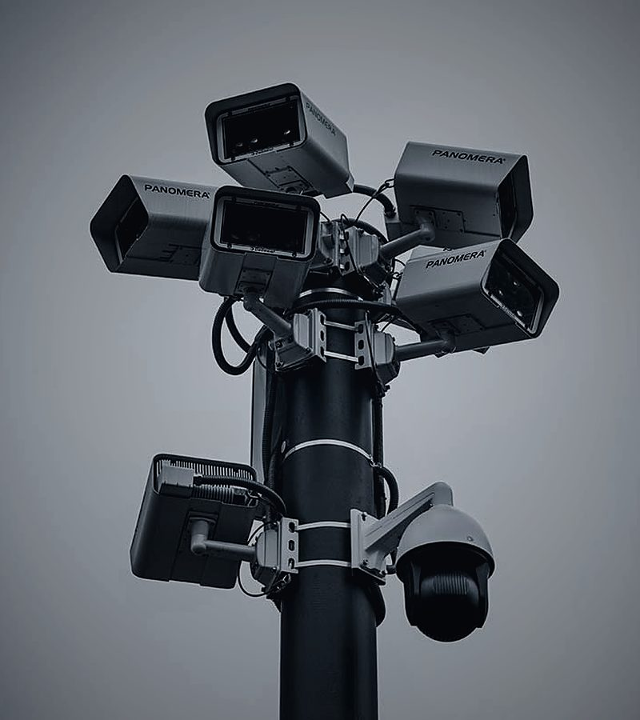
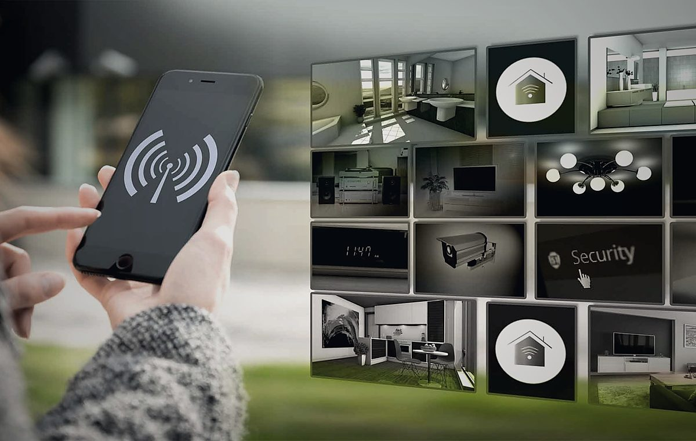

Alarmes & télésurveillance
Détection d'intrusion, vidéoprotection et report d'alarme sur notre astreinte. Le signal part, nous levons le doute — et un agent se déplace si la situation le demande.

Une alarme ne sert à rien si personne ne se déplace.
Une sirène fait fuir un amateur. Elle n'empêche pas un vol préparé, et elle ne vous dira jamais ce qu'il s'est réellement passé sur votre site à 3 h du matin.
C'est pourquoi nous traitons l'alarme comme un déclencheur, pas comme une protection. Le système détecte, le signal remonte à notre astreinte, nous levons le doute — par la vidéo puis, si nécessaire, par l'envoi physique d'un agent sur place.
Ce que nous installons
- Centrales d'alarme filaires ou radio, avec transmetteur
- Détecteurs de mouvement, d'ouverture et de bris de glace
- Vidéoprotection intérieure et extérieure, vision nocturne
- Détection périmétrique pour les grands sites et les chantiers
- Contrôle d'accès par badge ou par code
- Détecteurs techniques : fumée, inondation, coupure secteur
Ce qu'il se passe quand ça sonne.
Détection
Un détecteur se déclenche. Le transmetteur envoie l'alerte à notre astreinte en quelques secondes.
Levée de doute
Nous vérifions immédiatement les images et l'origine du déclenchement pour écarter les fausses alertes.
Intervention
Si le doute persiste, un agent est envoyé sur place : il constate, sécurise et alerte les forces de l'ordre si nécessaire.
Rapport
Vous êtes appelé, puis vous recevez un rapport d'intervention détaillé avec l'heure, les constats et les suites données.

Votre site dans votre poche.
Les systèmes que nous posons sont pilotables depuis votre smartphone : mise en service et hors service à distance, notifications en temps réel, accès aux images et historique des événements.
Nous assurons la maintenance et la vérification périodique de l'installation. Un détecteur qui ne détecte plus, une caméra désalignée ou une batterie en fin de vie, c'est une protection qui n'existe que sur le papier.
Alarme, rondes ou les deux ?
L'alarme couvre l'instant : elle voit tout, tout le temps, mais ne fait rien d'elle-même. La ronde couvre le terrain : elle constate ce qu'aucun capteur ne détecte — une clôture forcée, un véhicule qui repère les lieux, une fuite. Sur les sites sensibles, c'est la combinaison des deux qui donne les meilleurs résultats.
Les alarmes en pratique.
Peut-on conserver une alarme déjà installée ?
Dans la plupart des cas oui. Nous réalisons un diagnostic de l'installation existante : si la centrale est compatible, nous ajoutons simplement le transmetteur et raccordons le report vers notre astreinte, sans tout remplacer.
Que se passe-t-il en cas de fausse alerte ?
C'est précisément le rôle de la levée de doute. Nous vérifions avant d'agir, ce qui évite les déplacements inutiles et les dérangements à 4 h du matin pour un chat ou une porte mal fermée.
Et si internet ou le courant est coupé ?
Les centrales que nous posons disposent d'une batterie de secours et d'une transmission de repli (GSM). Une coupure prolongée remonte elle-même comme une alerte technique.
La vidéoprotection est-elle légale sur mon site ?
Oui, sous conditions : information des personnes filmées, cadrage limité à vos espaces privés, durée de conservation encadrée et, pour les lieux ouverts au public, autorisation préfectorale. Nous vous accompagnons sur ces démarches.

Faisons le point sur votre installation.
Nouvelle installation ou reprise d'un système existant : nous passons faire un diagnostic et vous remettons un devis clair.